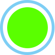
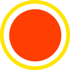

资产号12：{{assetNo}}
责任人1：{{person}}
上次小修日期1：{{date1}}
计划下次小修时间1：{{date2}}
建议下次大修时间1：{{date3}}
设备运行状态
 在线
 故障
 离线
离线
离线
| 压力及时间显示 | ||||
| 列车管 | 副风缸 | 工作风缸 | 容1 | 制动缸 |
|---|---|---|---|---|
| {{A1}} | {{A2}} | {{A3}} | {{A4}} | {{A5}} |
| 紧列 | 紧急室 | 容2 | 局减室 | 缓解风缸 |
| {{A6}} | {{A7}} | {{A8}} | {{A9}} | {{A10}} |